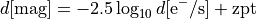

Magnitude conversions¶
-
galaxy.photometry.countToFlux(data, err, zeropoint)[source]¶ Convert data counts and their associated error into flux in .
- Parameters
data (float or ndarray[float]) – data in
err (float or ndarray[float]) – std errors in
zeropoint (float) – zeropoint associated to the data
- Returns
AB magnitude and associated error
- Return type
float or ndarray[float], float or ndarray[float]
-
galaxy.photometry.countToMag(data, err, zeropoint)[source]¶ Convert data counts and their associated error into AB magnitudes using the formula

where
 is the data and is the magnitude zeropoint. The error is given by
is the data and is the magnitude zeropoint. The error is given by- Parameters
data (float or ndarray[float]) – data in electron/s
err (float or ndarray[foat]) – std errors in electron/s
zeropoint (float) – zeropoint associated to the data
- Returns
AB magnitude and associated error
- Return type
float or ndarray[float], float or ndarray[float]